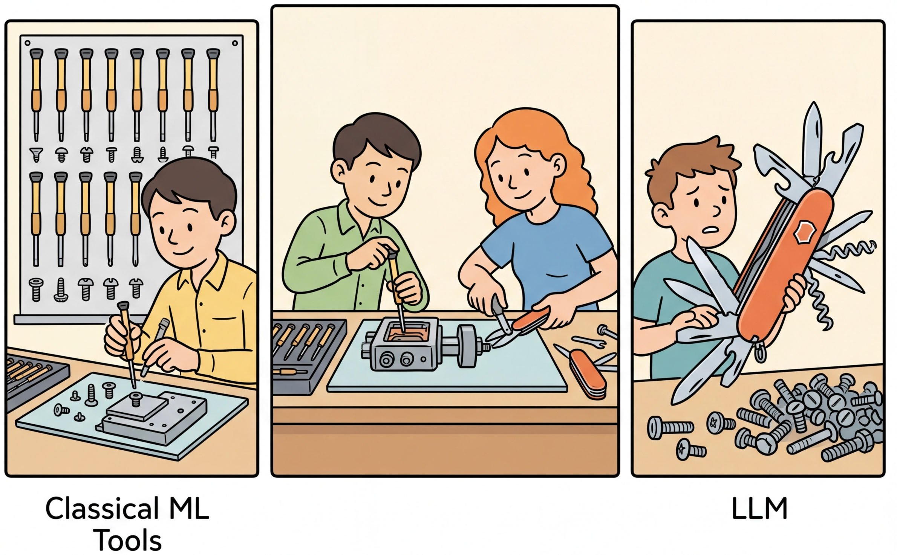

"When all you have is a 175-billion-parameter hammer, everything looks like a nail. Sometimes the nail is actually a screw, and a logistic regression is the screwdriver."
Label, Hammer-Skeptical AI Agent
Not every problem needs an LLM. The excitement around large language models has led many teams to reach for GPT-4 or Claude when a logistic regression model trained in five minutes would deliver the same accuracy at 1/1000th the cost and 1/100th the latency. Conversely, some teams stubbornly avoid LLMs for tasks where classical approaches require months of feature engineering to achieve mediocre results, while an LLM solves the problem out of the box. This section provides a structured decision framework for making this choice rigorously, grounded in cost modeling, latency analysis, and empirical benchmarks across common task types. The ML fundamentals from Section 00.1 remain the baseline against which LLM approaches should be measured.
Prerequisites
This section assumes familiarity with the LLM API ecosystem from Section 10.1 and the prompt engineering techniques from Chapter 11. Understanding of classical ML fundamentals from Section 0.1 and the scaling laws from Section 06.2 will help contextualize when smaller, specialized models outperform large general-purpose LLMs.
12.1.1 The Decision Framework

Choosing between an LLM and a classical ML model is not a binary decision. It is a multi-dimensional optimization across four axes: accuracy, latency, cost, and interpretability. The right choice depends on the specific requirements of your production system, the volume of requests you need to handle, and the tolerance your users have for errors, delays, and unexplainable outputs.
The LLM-vs-classical-ML decision echoes a deep principle from economics known as comparative advantage, formalized by David Ricardo in 1817. Ricardo showed that even when one country is better at producing everything, both countries benefit from specializing in what they do relatively best and trading. The same logic applies here: even if an LLM can technically handle a classification task, a logistic regression model has a comparative advantage in latency, cost, and interpretability for structured data. Conversely, an LLM has a comparative advantage in tasks requiring flexible language understanding. The hybrid approach is the "trade agreement" that lets each component specialize where its comparative advantage is greatest. This economic framing also explains why the optimal architecture changes with scale: at low volume, the fixed cost of training a classical model is not justified, so the LLM handles everything. At high volume, the per-query savings from classical models compound, shifting the equilibrium toward specialization.
12.1.1.1 The Four Decision Axes
Before reaching for an LLM, try the "five-minute baseline" test. Can you get 80% of the desired accuracy with scikit-learn in five minutes? If yes, start there and only bring in an LLM for the hard 20%. Many teams skip this step and deploy a $0.03-per-request LLM solution when a $0.00001-per-request logistic regression would have handled 90% of their traffic.
Each axis carries different weight depending on the application. A fraud detection system prioritizes accuracy and interpretability (regulators demand explanations). A customer chatbot prioritizes latency and naturalness. A batch document processing pipeline prioritizes cost per document. Understanding which axes matter most for your use case is the first step in making a good decision.
- Accuracy: How correct does the system need to be? Is 95% acceptable, or do you need 99.9%? Does the task have a clear ground truth, or is quality subjective?
- Latency: What is the acceptable response time? Real-time applications need sub-100ms responses. Interactive applications tolerate 1 to 3 seconds. Batch processing has no latency constraint.
- Cost: What is the per-query cost at your expected volume? A $0.01 per query cost is negligible at 100 queries per day but devastating at 10 million queries per day.
- Interpretability: Do you need to explain individual predictions? Regulatory requirements, debugging needs, and user trust all factor into this axis.
- Data Privacy: Can you send data to an external API? Organizations subject to GDPR, HIPAA, or financial regulations may be prohibited from transmitting sensitive data to third-party LLM providers. This constraint often tips the decision toward classical models or locally hosted open-source LLMs. Always verify your data governance policy before choosing an API-based approach.
summarizes this decision framework, showing how data structure, complexity, and volume guide the choice between classical ML, LLM, and hybrid approaches.
Why combine classical ML with LLMs? LLMs and classical models have complementary strengths. LLMs excel at understanding nuance, handling ambiguity, and generalizing from few examples, but they are slow and expensive per prediction. Classical models (logistic regression, XGBoost, random forests) are fast and cheap, but they require labeled data and handle only fixed feature schemas. The hybrid insight is that most production workloads contain a mix: 80% of cases are routine and well-handled by a fast classifier, while 20% are complex, ambiguous, or novel cases that benefit from LLM reasoning. Routing each request to the cheapest model that can handle it correctly yields LLM-quality results at classical-ML prices. This idea connects to the evaluation frameworks in Chapter 29, where you measure quality per dollar across model tiers.
Many teams default to LLM-based solutions without benchmarking against classical alternatives. In practice, a TF-IDF plus logistic regression classifier trained on 5,000 labeled examples frequently matches or beats zero-shot LLM classification on well-defined tasks, at a fraction of the cost. Conversely, some teams avoid LLMs even when few-shot prompting would outperform a classical model trained on a small, noisy dataset. The decision should be driven by empirical benchmarks on your actual data, not assumptions about model sophistication.
12.1.1.2 When Classical ML Wins
Classical machine learning models dominate when the data is structured, the task is well-defined, labeled data is available, and latency or cost constraints are tight. Here are the primary scenarios where classical ML is the better choice:
- Tabular prediction: For structured data with numeric and categorical features (credit scoring, churn prediction, demand forecasting), gradient-boosted trees (XGBoost, LightGBM) consistently outperform LLMs. LLMs cannot natively process tabular data without serializing it to text, which introduces noise and destroys the efficient representations that tree models exploit.
- High-volume classification with labeled data: When you have thousands of labeled examples for a text classification task, a TF-IDF plus logistic regression pipeline achieves competitive accuracy at a fraction of the cost. At 10 million queries per day, the cost difference between a $0.00001 per query classical model and a $0.01 per query LLM is the difference between $100 and $100,000 per day.
- Latency-critical applications: Classical models run inference in microseconds to low milliseconds on CPU. LLMs require tens of milliseconds to seconds depending on output length. For real-time bidding, fraud detection, or recommendation ranking where sub-10ms latency is required, classical ML is the only viable option.
- Deterministic extraction: When patterns are regular and well-defined (phone numbers, email addresses, dates, currency amounts), regex and rule-based systems are faster, cheaper, and more reliable than LLMs. They never hallucinate a phone number that does not exist in the input text.
12.1.1.3 When LLMs Win
LLMs excel in scenarios that require understanding natural language semantics, handling ambiguity, generalizing from few examples, or producing fluent text output. The pretraining and scaling that goes into these models is what gives them such broad generalization:
- Zero-shot and few-shot tasks: When labeled data is scarce or unavailable, LLMs can perform classification, extraction, and summarization using only a task description and a handful of examples in the prompt (see Section 11.1 for few-shot prompting techniques).
- Complex reasoning over text: Tasks that require multi-step reasoning, combining information from different parts of a document, or understanding implicit context are natural fits for LLMs.
- Open-ended generation: Producing emails, summaries, creative text, or conversational responses requires the generative capabilities of LLMs, which rely on the decoding strategies covered earlier. Classical models cannot generate coherent paragraphs.
- Ambiguous or subjective tasks: Sentiment analysis with sarcasm, intent detection with ambiguous phrasing, and content moderation with nuanced policy violations all benefit from the broad world knowledge and contextual understanding of LLMs.
12.1.2 Empirical Benchmarks: Classification
Why benchmarking matters more than intuition. Many teams skip benchmarking and make the LLM-vs-classical decision based on assumptions. A common mistake is assuming an LLM will always outperform a classical model on text tasks. In practice, a TF-IDF + logistic regression classifier trained on 5,000 labeled examples frequently matches or beats zero-shot LLM classification, at 1/10,000th the cost per prediction. Conversely, teams sometimes avoid LLMs for tasks where a few-shot prompt would outperform a classical model trained on a small, noisy dataset. The only way to know is to test both approaches on your actual data using consistent evaluation metrics.
The best way to make the decision is to benchmark. Let us compare four approaches on a common text classification task: classifying customer support tickets into categories (billing, technical, account, shipping, general). Code Fragment 12.1.3 shows this approach in practice.
12.1.2.1 TF-IDF + Logistic Regression Baseline
This snippet trains a TF-IDF plus logistic regression baseline for text classification.
# Train a TF-IDF + Logistic Regression baseline classifier
# This lightweight pipeline runs in milliseconds and costs nothing per prediction
from sklearn.feature_extraction.text import TfidfVectorizer
from sklearn.linear_model import LogisticRegression
from sklearn.model_selection import train_test_split
from sklearn.metrics import classification_report
import time
import numpy as np
# Sample labeled data (in production: thousands of examples)
texts = [
"I was charged twice for my subscription",
"My app keeps crashing on login",
"How do I change my email address",
"Package hasn't arrived after 10 days",
"What are your business hours",
"Refund not showing in my account",
"Error 500 when uploading files",
"Reset my password please",
"Tracking number not working",
"Do you offer student discounts",
] * 100 # Simulate larger dataset
labels = [
"billing", "technical", "account", "shipping", "general",
"billing", "technical", "account", "shipping", "general",
] * 100
X_train, X_test, y_train, y_test = train_test_split(
texts, labels, test_size=0.2, random_state=42
)
# Train TF-IDF + Logistic Regression
vectorizer = TfidfVectorizer(max_features=5000, ngram_range=(1, 2))
X_train_tfidf = vectorizer.fit_transform(X_train)
X_test_tfidf = vectorizer.transform(X_test)
model = LogisticRegression(max_iter=1000, C=1.0)
model.fit(X_train_tfidf, y_train)
# Benchmark inference
start = time.perf_counter()
for _ in range(1000):
vectorizer.transform(["I was charged twice"])
model.predict(vectorizer.transform(["I was charged twice"]))
elapsed = time.perf_counter() - start
print(f"Accuracy: {model.score(X_test_tfidf, y_test):.3f}")
print(f"Avg latency: {elapsed / 1000 * 1000:.2f} ms")
print(f"Cost per query: ~$0.000001 (CPU inference)")The TF-IDF baseline above needs labeled training data. When you have no labeled examples at all, the Hugging Face zero-shot-classification pipeline uses a natural language inference model to classify text into arbitrary categories with no training:
# Zero-shot classification with Hugging Face: no labeled training data needed.
# A natural language inference model scores text against arbitrary candidate labels.
from transformers import pipeline
classifier = pipeline("zero-shot-classification", model="facebook/bart-large-mnli")
result = classifier(
"My app keeps crashing on login",
candidate_labels=["billing", "technical", "account", "shipping", "general"]
)
print(result["labels"][0]) # "technical"
print(result["scores"][0]) # 0.87 (confidence)
# Batch classification
texts = ["I was charged twice", "Package hasn't arrived", "Reset my password"]
results = classifier(texts, candidate_labels=["billing", "technical", "account", "shipping"])
for text, r in zip(texts, results):
print(f"{text:40s} -> {r['labels'][0]} ({r['scores'][0]:.2f})")pip install transformers torch. Zero-shot classification is slower than TF-IDF (roughly 50 ms per query on GPU vs. 0.12 ms) but requires zero labeled data. It fills the gap between the classical baseline above and the LLM API approach that follows: faster and cheaper than an API call, but more capable than keyword matching when labels are descriptive.
For structured extraction tasks, regular expressions offer even faster, deterministic results. The following snippet demonstrates regex-based entity extraction for common patterns such as emails, phone numbers, and monetary amounts.
# Build a regex-based extractor for structured patterns like dates and emails
# Pattern matching handles deterministic extraction with zero inference cost
import re
import time
text = """
Contact us at support@example.com or call +1 (555) 123-4567.
Invoice total: $1,234.56 due by 2025-03-15.
Reach Jane Smith at jane.smith@company.org for details.
"""
# Regex extraction: deterministic, fast, perfect for regular patterns
patterns = {
"emails": r'[\w.+-]+@[\w-]+\.[\w.-]+',
"phones": r'\+?1?\s*\(?\d{3}\)?[\s.-]?\d{3}[\s.-]?\d{4}',
"amounts": r'\$[\d,]+\.\d{2}',
"dates": r'\d{4}-\d{2}-\d{2}',
}
start = time.perf_{counter}()
for _ in range(10000):
results = {k: re.findall(v, text) for k, v in patterns.items()}
elapsed = time.perf_{counter}() - start
for entity_{type}, matches in results.items():
print(f" {entity_{type}}: {matches}")
print(f"\nAvg latency: {elapsed / 10000 * 1000:.4f} ms")
print(f"False positives: 0 (deterministic)")
print(f"Cost: $0.00 (no API call)")12.1.5 Cost Modeling at Scale
The per-query cost difference between approaches becomes dramatic at scale. A cost model must account for not just API or inference costs, but also the engineering time to build and maintain each approach, infrastructure costs for self-hosted models, and the opportunity cost of latency.
| Approach | Per-Query Cost | 1K/day | 100K/day | 10M/day | Latency |
|---|---|---|---|---|---|
| Regex / Rules | ~$0.000001 | $0.03/mo | $3/mo | $300/mo | <0.01 ms |
| TF-IDF + LR | ~$0.00001 | $0.30/mo | $30/mo | $3,000/mo | 0.1 ms |
| Fine-tuned BERT | ~$0.0001 | $3/mo | $300/mo | $30,000/mo | 5 ms |
| GPT-4o-mini | ~$0.0003 | $9/mo | $900/mo | $90,000/mo | 300 ms |
| GPT-4o | ~$0.003 | $90/mo | $9,000/mo | $900,000/mo | 800 ms |
These cost estimates assume typical input/output sizes for a classification task (approximately 100 tokens, 10 output tokens). Costs for generation-heavy tasks (summarization, writing) will be significantly higher due to larger output token counts. Always calculate costs based on your actual token distributions, not averages from benchmarks.
12.1.6 The Decision Matrix
Pulling together all the factors above, here is a practical decision matrix. For any new ML task, walk through these questions in order:
- Is the pattern regular and well-defined? Use regex or rules. Do not overthink it.
- Is the data tabular (structured rows and columns)? Use XGBoost or LightGBM. LLMs are not competitive on tabular data.
- Do you have thousands of labeled examples? Train a classical model (TF-IDF + LR for text, BERT for complex text). It will be cheaper and faster.
- Is the task zero-shot or few-shot? Use an LLM. It is the only option that works without labeled data.
- Does the task require generation or complex reasoning? Use an LLM. Classical models cannot generate coherent text or reason over long documents.
- Is volume extremely high (millions per day) and cost matters? Consider fine-tuning a smaller model (BERT or a small LLM) to replace the large LLM, or use a hybrid approach where a classifier handles the easy cases.
- None of the above clearly applies? Start with an LLM for rapid prototyping, then evaluate whether a cheaper model can match its performance once you have collected enough labeled data from the LLM's outputs.
A common and powerful pattern is to start with an LLM for a new task, use it to generate labeled data, then train a smaller classical or fine-tuned model to replace the LLM for production. This gives you the speed-to-market of LLMs with the cost efficiency of classical ML. The LLM continues to serve as a fallback for edge cases the smaller model is not confident about. We will explore this pattern in depth in Section 12.3.
Show Answer
Show Answer
Show Answer
Show Answer
Show Answer
Experiment with the classification benchmark from this section:
- In the TF-IDF + XGBoost code, change
max_featuresfrom 5000 to 500 and then to 50000. Observe how classification accuracy and training time change. This illustrates the vocabulary size tradeoff in traditional NLP. - Replace XGBoost with a simple
LogisticRegression()from sklearn. Compare accuracy and inference latency. For many text classification tasks, logistic regression is surprisingly competitive. - In the cost comparison table, recalculate the daily cost assuming your volume is 100x higher (1 million queries per day). At what volume does the cost difference become prohibitive for an LLM approach?
If you classify millions of items per day, a fine-tuned BERT or even a gradient-boosted tree is often 100x cheaper and 10x faster than an LLM API call. Reserve LLMs for tasks requiring generation, reasoning, or handling novel categories.
- The choice between LLM and classical ML is a multi-dimensional optimization across accuracy, latency, cost, and interpretability; there is no universal best option.
- Classical ML wins decisively for tabular data, high-volume classification with labeled data, latency-critical applications, and regular pattern extraction.
- LLMs win for zero-shot tasks, complex reasoning, open-ended generation, and ambiguous or subjective classification.
- Cost scales linearly with volume: a 300x per-query cost difference becomes $900,000/month vs. $3,000/month at 10 million daily queries.
- The LLM bootstrap pattern (start with LLM, collect labels, train cheaper model) combines fast prototyping with long-term cost efficiency.
- Always benchmark your specific task. General guidelines help frame the decision, but empirical results on your data are what matter.
Who: A data science team at a fintech company processing 2 million credit card transactions per day.
Situation: The team was evaluating whether to replace their existing XGBoost fraud detection model with an LLM-based classifier that could analyze transaction descriptions, merchant names, and user behavior narratives in natural language.
Problem: The XGBoost model achieved 94% precision at 80% recall on structured features (amount, time, location, merchant category), but missed fraud patterns hidden in unstructured text fields like merchant descriptions and customer notes.
Dilemma: A full LLM replacement would capture text signals but increase per-transaction cost from $0.0001 to $0.03 (a 300x increase), pushing monthly costs from $6,000 to $1.8 million. A hybrid approach could combine both but added architectural complexity.
Decision: They kept XGBoost as the primary model for all transactions, and routed only the 5% of transactions that fell in the model's uncertainty zone (fraud probability between 0.3 and 0.7) to an LLM for secondary analysis of the text fields.
How: The XGBoost model scored every transaction in under 5ms. Uncertain transactions were batched and sent to GPT-4 with the transaction context for text-based risk assessment. The LLM score was combined with the XGBoost score using a simple weighted average calibrated on a holdout set.
Result: Overall recall improved from 80% to 88% while maintaining 94% precision. Monthly costs increased by only $27,000 (the LLM processed 100,000 transactions per day instead of 2 million), and average latency for flagged transactions was 1.2 seconds (acceptable for the async fraud review workflow).
Lesson: The right question is rarely "LLM or classical ML" but rather "where in the pipeline does each approach add the most value per dollar spent?"
A logistic regression model trained on TF-IDF features can classify spam emails in under a millisecond at a cost of essentially zero. An LLM doing the same task takes 500 milliseconds and costs a fraction of a cent per request. At 10 million emails per day, that fraction adds up to thousands of dollars monthly.
Small language models closing the gap. Models under 10B parameters (Phi-4, Gemma 3, Llama 3.2) are achieving surprisingly strong performance on focused tasks when fine-tuned, challenging the assumption that LLM API calls are always needed. The decision framework in this section must be re-evaluated as small model capabilities improve each quarter.
Distillation from LLMs to classical models. Techniques for distilling LLM capabilities into lightweight classifiers and extractors (covered in Section 15.5) are making it practical to prototype with LLMs and deploy with classical ML, combining the rapid development cycle of LLMs with the cost efficiency of traditional models.
Hybrid routing systems. Production systems increasingly use ML classifiers to route requests between LLMs of different sizes and classical models based on estimated task complexity, achieving near-frontier quality at a fraction of the cost.
Exercises
Name the four decision axes for choosing between an LLM and classical ML. For a fraud detection system, rank these axes by importance and explain your ranking.
Answer Sketch
The four axes are accuracy, latency, cost, and interpretability. For fraud detection: (1) Accuracy is paramount because false negatives mean financial loss. (2) Interpretability is required by regulators for explanations. (3) Latency must be sub-second for real-time transaction screening. (4) Cost matters at scale. This ranking favors classical ML (e.g., XGBoost) because it excels on all four axes for structured tabular data.
For each of the following tasks, recommend LLM, classical ML, or hybrid, and justify: (a) email spam filtering at 10M emails/day, (b) open-ended customer support chat, (c) product category classification with 500 known categories.
Answer Sketch
(a) Classical ML: high volume, well-defined binary task, low latency needed, abundant training data. (b) LLM: open-ended generation, natural language understanding, conversation context required. (c) Hybrid: train a fast classifier on the 500 categories for most items; escalate ambiguous items (low confidence) to an LLM for reasoning about edge cases.
Write a Python function that compares the monthly cost of processing N documents using: (a) a scikit-learn classifier on CPU, (b) GPT-4o via API, (c) a fine-tuned GPT-4o-mini. Assume reasonable per-document token counts and pricing.
Answer Sketch
Estimate: sklearn on CPU is essentially free for inference ($0 marginal). GPT-4o at ~500 tokens/doc: cost = N * 500/1000 * ($0.0025 + $0.01 * 0.2). Fine-tuned GPT-4o-mini at ~500 tokens/doc: roughly 4x cheaper per token than GPT-4o. Return a dictionary with costs for each approach. The key insight: at 10M docs/month, even cheap API costs dominate; sklearn is 1000x less expensive.
Explain why an LLM with 200ms latency per request might be unsuitable for a real-time recommendation system, even if its accuracy is higher than a classical model with 5ms latency.
Answer Sketch
Real-time recommendation systems typically need sub-50ms responses to avoid degrading user experience. At 200ms, the LLM adds noticeable delay to page loads. Furthermore, if recommendations are needed for multiple items on a page, latency multiplies. The classical model at 5ms can serve all recommendations within the latency budget, making slightly lower accuracy an acceptable tradeoff for responsiveness.
Your dataset contains both structured features (numerical, categorical) and unstructured text. Compare three approaches: (a) LLM only, (b) classical ML with TF-IDF on text, (c) hybrid with LLM embeddings plus structured features. When does each approach win?
Answer Sketch
(a) LLM only: wins when text is the dominant signal and structured features add little (e.g., open-ended Q&A). (b) Classical ML with TF-IDF: wins when structured features dominate and text is simple (e.g., tabular fraud detection with a notes field). (c) Hybrid: wins when both signals matter (e.g., job matching where salary range and skill descriptions both contribute). The hybrid approach lets you leverage LLM text understanding while the classical model handles numerical features that LLMs process poorly.
What Comes Next
In the next section, Section 12.2: LLM as Feature Extractor, we explore using LLMs as feature extractors, feeding their representations into specialized downstream models.
Provides rigorous empirical evidence that tree-based models (XGBoost, Random Forest) consistently beat deep learning on medium-sized tabular datasets. This is the key reference for understanding when classical ML remains the right choice, and it directly supports the decision framework presented in this section.
Benchmarks XGBoost against multiple deep learning architectures on tabular tasks and finds that simple gradient-boosted trees match or exceed neural approaches in most scenarios. Essential reading for teams tempted to use LLMs for structured data problems where traditional ML would suffice.
Chen, T. & Guestrin, C. (2016). XGBoost: A Scalable Tree Boosting System. KDD 2016.
The original XGBoost paper, which remains the gold standard for efficient gradient boosting. Understanding XGBoost's strengths (speed, interpretability, handling of missing values) is critical for making informed LLM-vs-classical decisions. Recommended for practitioners who want to appreciate what classical ML does well.
Zhao, W. X. et al. (2023). A Survey of Large Language Models.
A comprehensive survey covering LLM architectures, training methods, and capabilities across dozens of task types. This provides the broad context needed to understand where LLMs excel and where they struggle. Ideal for engineers building their mental model of LLM strengths before making build-vs-prompt decisions.
Introduces CheckList, a systematic framework for testing NLP model capabilities beyond aggregate accuracy metrics. The behavioral testing methodology is directly applicable to evaluating whether an LLM or classical model better fits your specific requirements. Recommended for teams building rigorous evaluation pipelines.
Anthropic. (2024). When to Use Claude vs. Traditional ML.
Anthropic's official guide for deciding when Claude is the right tool versus traditional ML approaches. Includes practical decision trees and cost considerations from the provider's perspective. Useful as a vendor-specific complement to the general framework covered in this section.